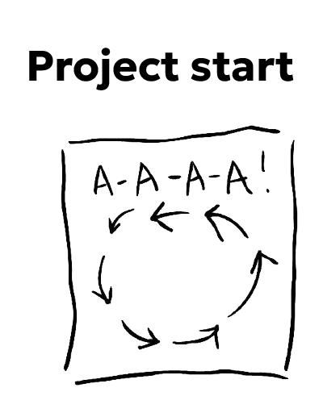
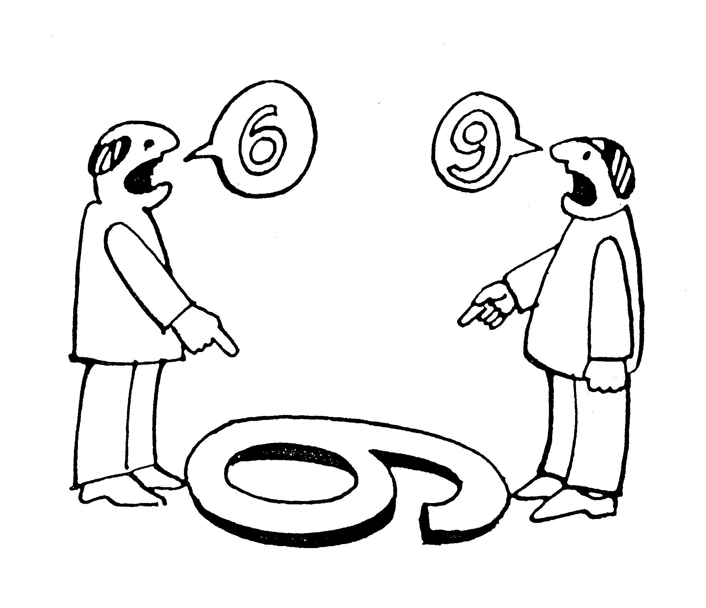
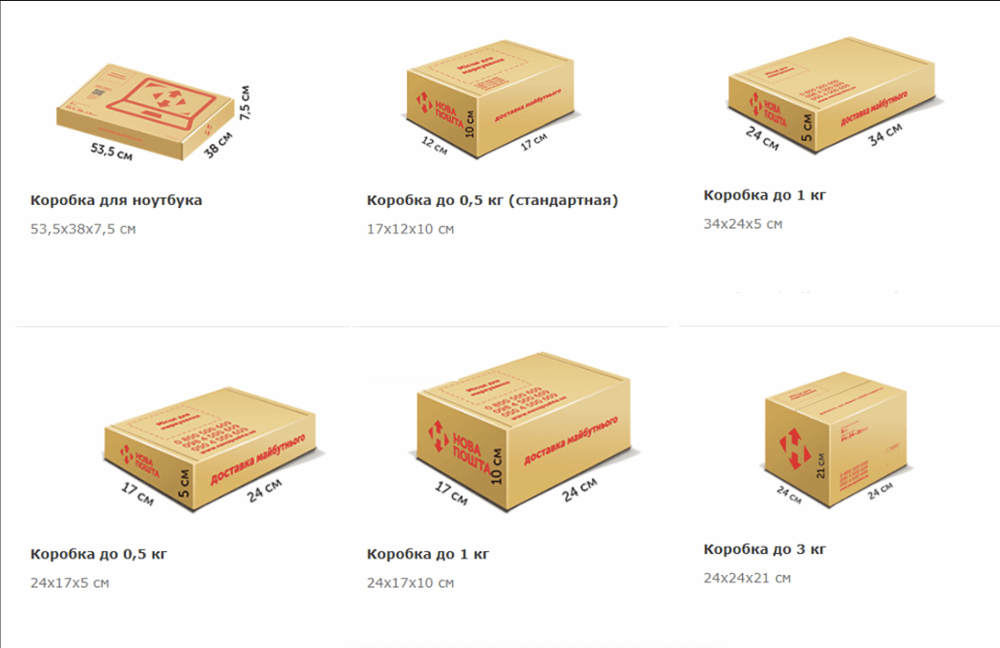
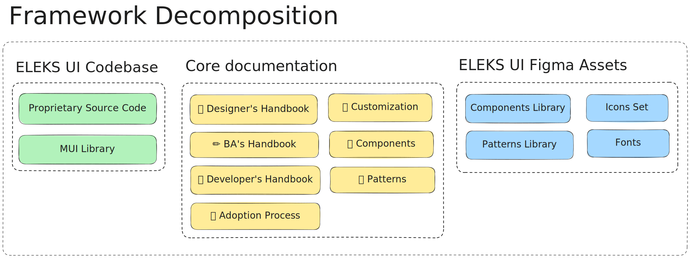
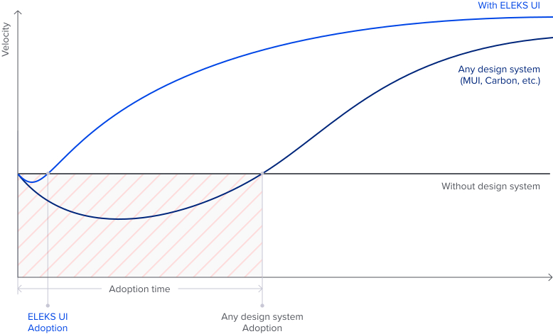
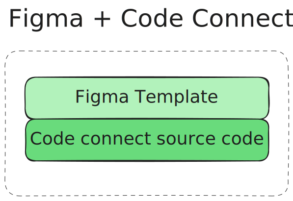
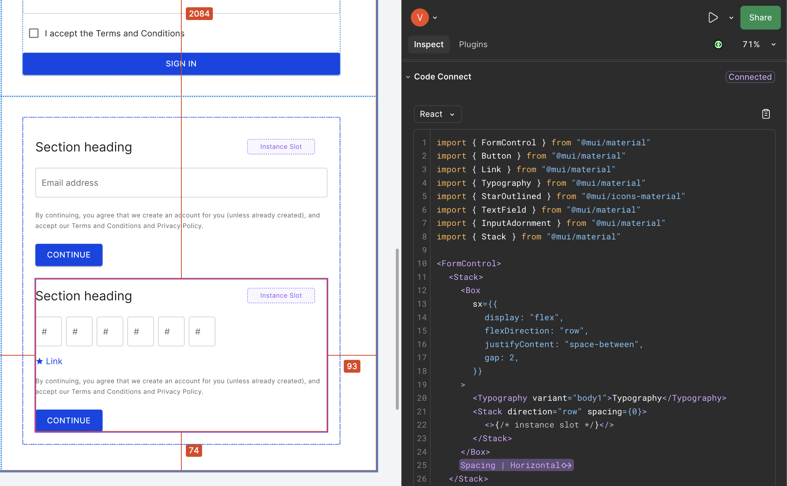
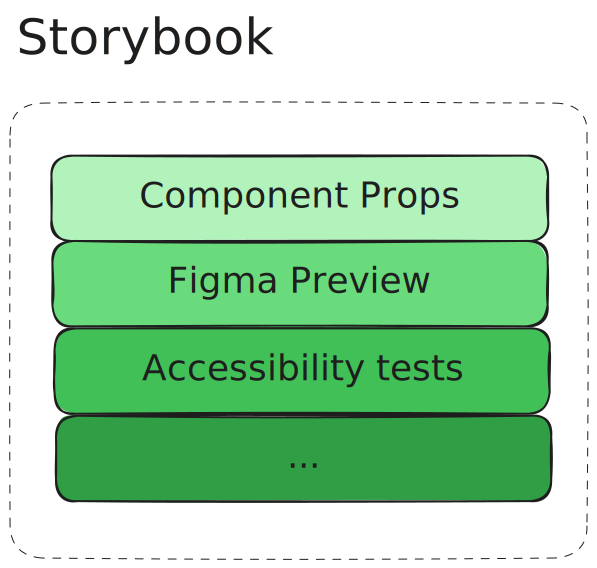
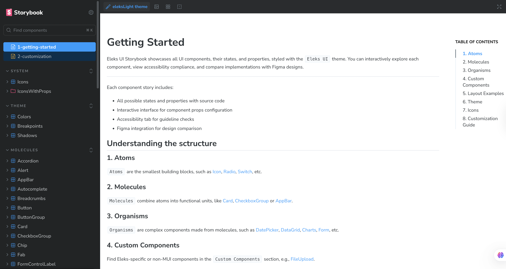

<!doctype html>
<html lang="en">
  <head>
    <meta charset="utf-8" />
    <meta
      name="viewport"
      content="width=device-width, initial-scale=1.0, maximum-scale=1.0, user-scalable=no"
    />

    <title>ELEKS UI For Sales Team</title>
    <link rel="stylesheet" href="dist/reveal.css" />
    <link rel="stylesheet" href="dist/theme/serif.css" id="theme" />
    <link rel="stylesheet" href="plugin/highlight/monokai.css" />
    <link rel="stylesheet" href="css/layout.css" />
    <link rel="stylesheet" href="plugin/customcontrols/style.css" />
    <link rel="stylesheet" href="plugin/chalkboard/style.css" />

    <link rel="stylesheet" href="plugin/reveal-pointer/pointer.css" />

    <script defer src="dist/fontawesome/all.min.js"></script>

    <script type="text/javascript">
      var forgetPop = true;
      function onPopState(event) {
        if (forgetPop) {
          forgetPop = false;
        } else {
          parent.postMessage(event.target.location.href, "app://obsidian.md");
        }
      }
      window.onpopstate = onPopState;
      window.onmessage = (event) => {
        if (event.data == "reload") {
          window.document.location.reload();
        }
        forgetPop = true;
      };

      function fitElements() {
        const itemsToFit = document.getElementsByClassName("fitText");
        for (const item in itemsToFit) {
          if (Object.hasOwnProperty.call(itemsToFit, item)) {
            var element = itemsToFit[item];
            fitElement(element, 1, 1000);
            element.classList.remove("fitText");
          }
        }
      }

      function fitElement(element, start, end) {
        let size = (end + start) / 2;
        element.style.fontSize = `${size}px`;

        if (Math.abs(start - end) < 1) {
          while (element.scrollHeight > element.offsetHeight) {
            size--;
            element.style.fontSize = `${size}px`;
          }
          return;
        }

        if (element.scrollHeight > element.offsetHeight) {
          fitElement(element, start, size);
        } else {
          fitElement(element, size, end);
        }
      }

      document.onreadystatechange = () => {
        fitElements();
        if (document.readyState === "complete") {
          if (window.location.href.indexOf("?export") != -1) {
            parent.postMessage(event.target.location.href, "app://obsidian.md");
          }
          if (window.location.href.indexOf("print-pdf") != -1) {
            let stateCheck = setInterval(() => {
              clearInterval(stateCheck);
              window.print();
            }, 250);
          }
        }
      };
    </script>
  </head>
  <body>
    <div class="reveal">
      <div class="slides">
        <section>
          <section data-markdown>
            <script type="text/template">
              <!-- .slide: class="drop" -->
              <div class="" style="position: absolute; left: 0px; top: 0px; height: 900px; width: 1440px; min-height: 900px; display: flex; flex-direction: column; align-items: center; justify-content: center" absolute="true">

              <style>

              .slide-overlay {
                width: 100%;
                height: 100%;
                position: relative;
              }

              .slide-overlay img {
                position: absolute;
                left: 50%;
                transform: translateX(-50%);
              }

              </style>


              ## Typical situations with project start

              


              * What kind of UI library should we choose?
              * Are there any mockups ready?
              * Сan we use solutions from past projects?
              * Do we have some documentation?
              </div>
            </script>
          </section>
          <section data-markdown>
            <script type="text/template">
              <!-- .slide: class="drop" -->
              <div class="" style="position: absolute; left: 0px; top: 0px; height: 900px; width: 1440px; min-height: 900px; display: flex; flex-direction: column; align-items: center; justify-content: center" absolute="true">

              ## Typical situation #1

              Designer vs Developer

              
              </div>
            </script>
          </section>
          <section data-markdown>
            <script type="text/template">
              <!-- .slide: class="drop" -->
              <div class="" style="position: absolute; left: 0px; top: 0px; height: 900px; width: 1440px; min-height: 900px; display: flex; flex-direction: column; align-items: center; justify-content: center" absolute="true">

              ## Typical situation #1

              Designer vs Developer

              * There are no requirements or recommendations on how to combine UI elements
              * There is no information about fonts
              * There is no information about theming
              * etc...
              </div>
            </script>
          </section>
          <section data-markdown>
            <script type="text/template">
              <!-- .slide: class="drop" -->
              <div class="" style="position: absolute; left: 0px; top: 0px; height: 900px; width: 1440px; min-height: 900px; display: flex; flex-direction: column; align-items: center; justify-content: center" absolute="true">

              ## Typical situation #2

              Development process

              <video data-autoplay controls width="800" height="600"><source src="reusable-components/imgs/development-process.mp4" type="video/mp4"></video>
              </div>
            </script>
          </section>
          <section data-markdown>
            <script type="text/template">
              <!-- .slide: class="drop" -->
              <div class="" style="position: absolute; left: 0px; top: 0px; height: 900px; width: 1440px; min-height: 900px; display: flex; flex-direction: column; align-items: center; justify-content: center" absolute="true">

              ## Typical situations #3

              Different points of view

              
              </div>
            </script>
          </section>
          <section data-markdown>
            <script type="text/template">
              <!-- .slide: class="drop" -->
              <div class="" style="position: absolute; left: 0px; top: 0px; height: 900px; width: 1440px; min-height: 900px; display: flex; flex-direction: column; align-items: center; justify-content: center" absolute="true">

              ## How to solve all these problems?
              </div>
            </script>
          </section>
          <section data-markdown>
            <script type="text/template">
              <!-- .slide: class="drop" -->
              <div class="" style="position: absolute; left: 0px; top: 0px; height: 900px; width: 1440px; min-height: 900px; display: flex; flex-direction: column; align-items: center; justify-content: center" absolute="true">

              ## Standardization

              <div class="slide-overlay">

              


              


              


              </div>
              </div>
            </script>
          </section>
          <section data-markdown>
            <script type="text/template">
              <!-- .slide: class="drop" -->
              <div class="" style="position: absolute; left: 0px; top: 0px; height: 900px; width: 1440px; min-height: 900px; display: flex; flex-direction: column; align-items: center; justify-content: center" absolute="true">

              ## Why do we need standardizations?

              - &shy;<!-- .element: class="fragment" data-fragment-index="1" -->Because variety brings complexity
              - &shy;<!-- .element: class="fragment" data-fragment-index="2" -->We reduce uncertain situations
              - &shy;<!-- .element: class="fragment" data-fragment-index="3" -->Make the development process faster and more predictable
              </div>
            </script>
          </section>
          <section data-markdown>
            <script type="text/template">
              <!-- .slide: class="drop" -->
              <div class="" style="position: absolute; left: 0px; top: 0px; height: 900px; width: 1440px; min-height: 900px; display: flex; flex-direction: column; align-items: center; justify-content: center" absolute="true">

              ## What can be implemented?

              Some collaboration framework
              </div>
            </script>
          </section>
          <section data-markdown>
            <script type="text/template">
              <!-- .slide: class="drop" -->
              <div class="" style="position: absolute; left: 0px; top: 0px; height: 900px; width: 1440px; min-height: 900px; display: flex; flex-direction: column; align-items: center; justify-content: center" absolute="true">

              ## ELEKS UI - Collaboration Framework

              * Allows you to deliver projects faster
              * Allows you to deliver scalable projects with high quality
              * Allows you to improve communication and reduce rework between Dev, Design, QA, BA, and other teams
              </div>
            </script>
          </section>
          <section data-markdown>
            <script type="text/template">
              <!-- .slide: class="drop" -->
              <div class="" style="position: absolute; left: 0px; top: 0px; height: 900px; width: 1440px; min-height: 900px; display: flex; flex-direction: column; align-items: center; justify-content: center" absolute="true">

              ## ELEKS UI

              <div class="block">

              

              </div>


              <!-- .element: style="position: relative" -->

              <div class="block">

              

              </div>


              <!-- .element: style="position: relative; width: 0%" -->
              </div>
            </script>
          </section>
          <section data-markdown>
            <script type="text/template">
              <!-- .slide: class="drop" -->
              <div class="" style="position: absolute; left: 0px; top: 0px; height: 900px; width: 1440px; min-height: 900px; display: flex; flex-direction: column; align-items: center; justify-content: center" absolute="true">

              ## Fast adaptation process

              
              </div>
            </script>
          </section>
          <section data-markdown>
            <script type="text/template">
              <!-- .slide: class="drop" -->
              <div class="" style="position: absolute; left: 0px; top: 0px; height: 900px; width: 1440px; min-height: 900px; display: flex; flex-direction: column; align-items: center; justify-content: center" absolute="true">

              ## Figma Code Connect​

              Provides implementation-ready code for all Ul layers from basic elements to complex layout-level organisms

              <!-- .element: style="text-align: left; width: 100%" class="gradient-card" -->

              <split left="1" right="2" gap="2" even style="font-size: 1.8rem">

              <div class="block">

              

              </div>


              <div class="block">

              

              </div>


              </split>
              </div>
            </script>
          </section>
          <section data-markdown>
            <script type="text/template">
              <!-- .slide: class="drop" -->
              <div class="" style="position: absolute; left: 0px; top: 0px; height: 900px; width: 1440px; min-height: 900px; display: flex; flex-direction: column; align-items: center; justify-content: center" absolute="true">

              ## Storybook

              An interactive space showcasing all available components with their properties, states, and implementation examples
              <!-- .element: style="text-align: left; width: 100%" class="gradient-card" -->

              <split left="1" right="2" gap="2" even style="font-size: 1.8rem">

              <div class="block">

              

              </div>


              <div class="block">

              

              </div>


              </split>
              </div>
            </script>
          </section>
          <section data-markdown>
            <script type="text/template">
              <!-- .slide: class="drop" -->
              <div class="" style="position: absolute; left: 0px; top: 0px; height: 900px; width: 1440px; min-height: 900px; display: flex; flex-direction: column; align-items: center; justify-content: center" absolute="true">

              ## Q&A
              </div>
            </script>
          </section>
        </section>
      </div>
    </div>

    <script src="dist/reveal.js"></script>

    <script src="plugin/markdown/markdown.js"></script>
    <script src="plugin/highlight/highlight.js"></script>
    <script src="plugin/zoom/zoom.js"></script>
    <script src="plugin/notes/notes.js"></script>
    <script src="plugin/math/math.js"></script>
    <script src="plugin/mermaid/mermaid.js"></script>
    <script src="plugin/chart/chart.min.js"></script>
    <script src="plugin/chart/plugin.js"></script>
    <script src="plugin/menu/menu.js"></script>
    <script src="plugin/customcontrols/plugin.js"></script>
    <script src="plugin/chalkboard/plugin.js"></script>
    <script src="plugin/reveal-pointer/pointer.js"></script>
    <script src="plugin/elapsed-time-bar/elapsed-time-bar.js"></script>

    <script>
      function extend() {
        var target = {};
        for (var i = 0; i < arguments.length; i++) {
          var source = arguments[i];
          for (var key in source) {
            if (source.hasOwnProperty(key)) {
              target[key] = source[key];
            }
          }
        }
        return target;
      }

      function isLight(color) {
        let hex = color.replace("#", "");

        // convert #fff => #ffffff
        if (hex.length == 3) {
          hex = `${hex[0]}${hex[0]}${hex[1]}${hex[1]}${hex[2]}${hex[2]}`;
        }

        const c_r = parseInt(hex.substr(0, 2), 16);
        const c_g = parseInt(hex.substr(2, 2), 16);
        const c_b = parseInt(hex.substr(4, 2), 16);
        const brightness = (c_r * 299 + c_g * 587 + c_b * 114) / 1000;
        return brightness > 155;
      }

      var bgColor = getComputedStyle(document.documentElement)
        .getPropertyValue("--r-background-color")
        .trim();
      var isLight = isLight(bgColor);

      if (isLight) {
        document.body.classList.add("has-light-background");
      } else {
        document.body.classList.add("has-dark-background");
      }

      // default options to init reveal.js
      var defaultOptions = {
        controls: true,
        progress: true,
        history: true,
        center: true,
        transition: "default", // none/fade/slide/convex/concave/zoom
        plugins: [
          RevealMarkdown,
          RevealHighlight,
          RevealZoom,
          RevealNotes,
          RevealMath.MathJax3,
          RevealMermaid,
          RevealChart,
          RevealCustomControls,
          RevealMenu,
          RevealPointer,
          RevealChalkboard,
          ElapsedTimeBar,
        ],

        allottedTime: 120 * 1000,

        mathjax3: {
          mathjax: "plugin/math/mathjax/tex-mml-chtml.js",
        },
        markdown: {
          gfm: true,
          mangle: true,
          pedantic: false,
          smartLists: false,
          smartypants: false,
        },

        mermaid: {
          theme: isLight ? "default" : "dark",
        },

        customcontrols: {
          controls: [
            {
              icon: '<i class="fa fa-pen-square"></i>',
              title: "Toggle chalkboard (B)",
              action: "RevealChalkboard.toggleChalkboard();",
            },
            {
              icon: '<i class="fa fa-pen"></i>',
              title: "Toggle notes canvas (C)",
              action: "RevealChalkboard.toggleNotesCanvas();",
            },
          ],
        },
        menu: {
          loadIcons: false,
        },
      };

      // options from URL query string
      var queryOptions = Reveal().getQueryHash() || {};

      var options = extend(
        defaultOptions,
        {
          width: 1440,
          height: 900,
          margin: 0,
          controls: true,
          progress: true,
          slideNumber: true,
          transition: "slide",
          transitionSpeed: "default",
        },
        queryOptions,
      );
    </script>

    <script>
      Reveal.initialize(options);
    </script>
  </body>

  <!-- created with Advanced Slides -->
</html>
